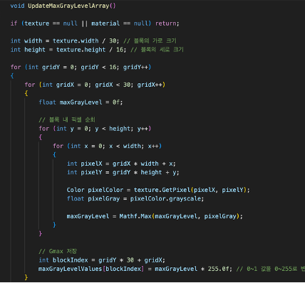

Automotive Head-Up Display — Software-Only System
Implemented a software-only HUD: synthetic signals, calibration (homography + distortion), GLSL pre-warp, and a tiled local dimming algorithm with alpha blending in linear space. No physical sensors (camera/IMU) or vehicle bus were used; all signals and optics effects were simulated in software.
Role: end-to-end software implementation — scene/data simulators, calibration, blending/tonemapping, shader pipeline, QA tools.
-
Tech Stack
C#/C++ HSML OpenGL/GLSL OpenCV (simulation) Git
-
Software Architecture
1) Synthetic Data: speed/turn/alerts are procedurally generated with noise & timing jitter for repeatable tests.
2) Scene Graph: HUD widgets (speed, turn cues, warnings) with Z-ordering and timeline states.
3) Calibration: virtual checkerboards → homography (plane mapping) + radial/tangential distortion fit → pre-warp map.
4) Renderer: FBO → GLSL warp (barrel/tangential) → local dimming map → alpha blending → composited output. -
Local Dimming Algorithm (Software)
We implemented a software local dimming stage to enhance contrast and readability of HUD graphics over varying backgrounds. The frame is split into tiles; for each tile we estimate the background luminance and drive a per-tile backlight factor. To avoid halos and flicker, we applied spatial/temporal smoothing and brightness clamps.
Pipeline: linearize (γ⁻¹) → downsample → per-tile luminance
L_bg(max/percentile/mean) → smooth (Gaussian + EMA) → compute backlightB = clamp( a·L_bg + b )→ upsample → modulate foreground.Key details: linear domain for all math; a/b from calibration; EMA hysteresis for stability; guard bands near UI glyphs to protect edges.

-
Alpha Blending & Compositing
HUD glyphs and widgets are composited using premultiplied alpha in the linear color space:
C_out = C_fg + (1 - α_fg) · C_bg. We generate foreground in SDF (signed-distance-field) for crisp scalable text, convert sRGB→linear before blending, then linear→sRGB at the end. Alpha ramps (ease-in/out) are used for readable transitions without flicker.To preserve contrast after local dimming, the foreground intensity is re-normalized by the per-tile backlight factor while keeping
αconsistent, avoiding washed-out edges. -
Linear / Gamma Handling
All tone and blend math run in linear space:
C_lin = (C_srgb)^{γ}, withγ≈2.2. After local dimming and blending, we apply the inverse (linear→sRGB) and an optional display LUT for gamma/contrast trims. This prevents “double gamma” artifacts and keeps small text legible. -
Key Challenges & Debugging
• Haloing near glyphs: reduced tile size around HUD UI; added edge guards and alpha-aware normalization.
• Banding in low luminance: dithered LUT + slight noise before γ; improved gradient smoothness.
• Shear in warp grid: fixed vertex stride/UV normalization; removed geometric artifacts in pre-warp. -
Demo & Optimization
Add a local demo video below (use
.mp4for best compatibility; you may include a.movfallback).


Project Summary (Short)
Implemented a software-only HUD: synthetic signals, calibration (homography + distortion), GLSL pre-warp, and a tiled local dimming algorithm with alpha blending in linear space. The pipeline maintains readability and contrast without any physical sensors or CAN data, strictly following the report’s scope and constraints.